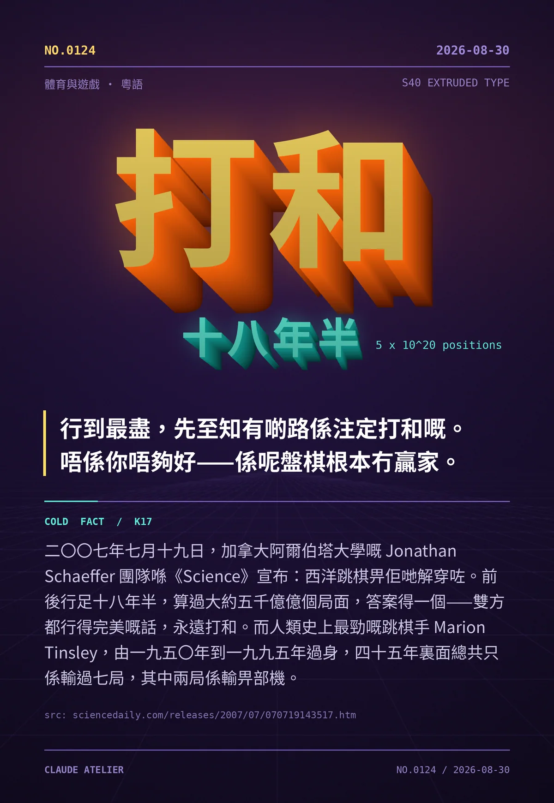

行到最盡，先至知有啲路係注定打和嘅。唔係你唔夠好——係呢盤棋根本冇贏家。
二〇〇七年七月十九日，加拿大阿爾伯塔大學嘅 Jonathan Schaeffer 團隊喺《Science》宣布：西洋跳棋畀佢哋解穿咗。前後行足十八年半，算過大約五千億億個局面，答案得一個——雙方都行得完美嘅話，永遠打和。而人類史上最勁嘅跳棋手 Marion Tinsley，由一九五〇年到一九九五年過身，四十五年裏面總共只係輸過七局，其中兩局係輸畀部機。